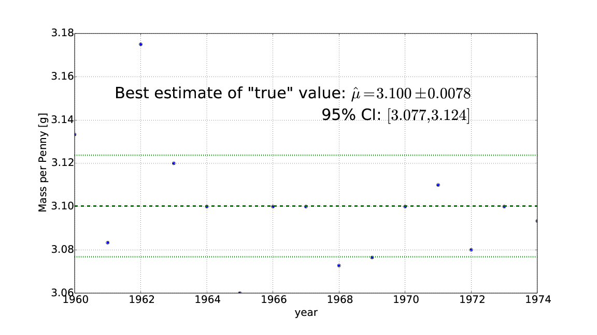
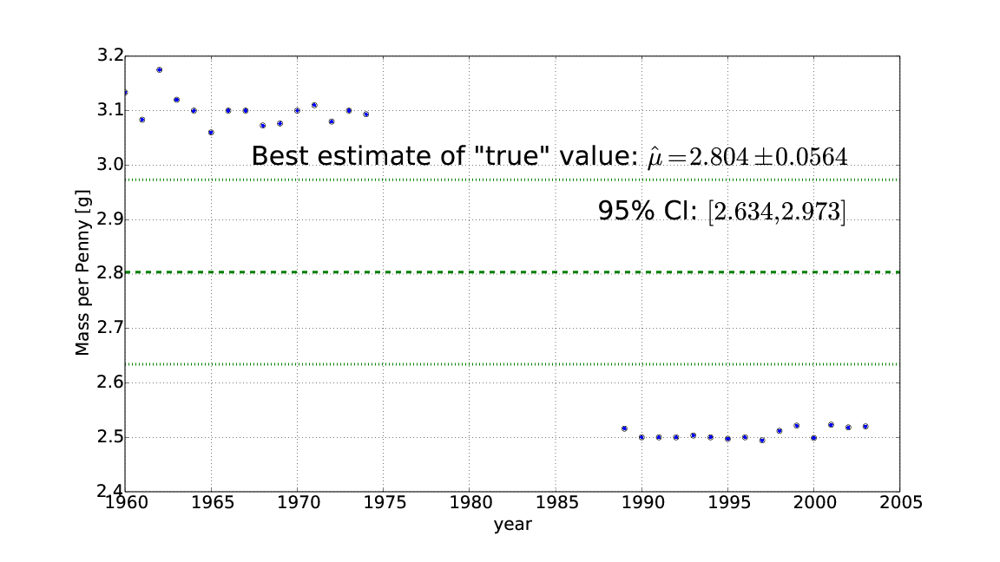
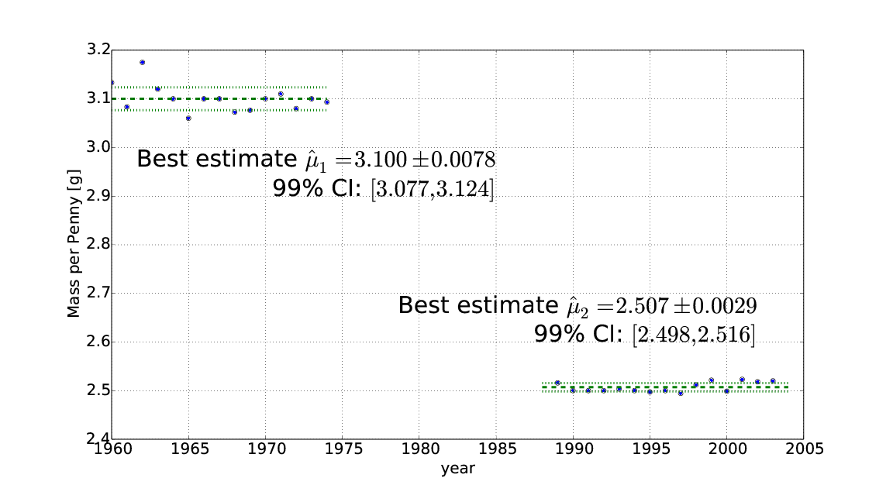
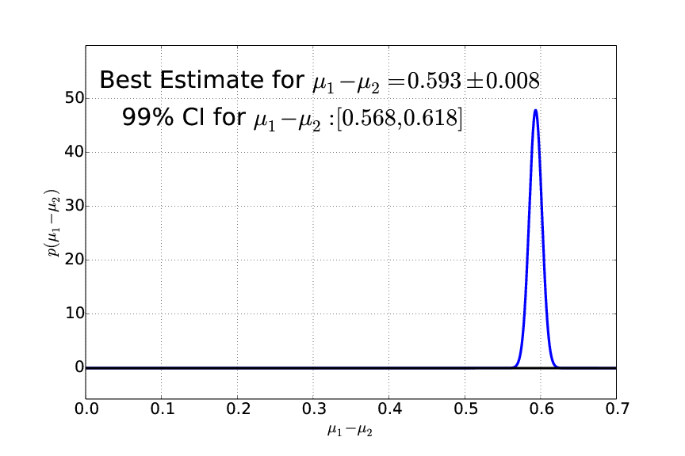

I just added an example of simple model construction to my textbook, Statistical Inference for Everyone. It's a process I don't think I've ever seen in an intro stats book, but is common in scientific work. The idea is that you start off with a simple model, collect data, then notice where your simple model breaks, propose a new more complex model, and do the analysis again.
The entire data set I use is here, where I have the mass of US Pennies for several years:
| Year | Mass |
|---|---|
| 1960 | 3.133 |
| 1961 | 3.083 |
| 1962 | 3.175 |
| 1963 | 3.120 |
| 1964 | 3.100 |
| 1965 | 3.060 |
| 1966 | 3.100 |
| 1967 | 3.100 |
| 1968 | 3.073 |
| 1969 | 3.076 |
| 1970 | 3.100 |
| 1971 | 3.110 |
| 1972 | 3.080 |
| 1973 | 3.100 |
| 1974 | 3.093 |
| 1989 | 2.516 |
| 1990 | 2.500 |
| 1991 | 2.500 |
| 1992 | 2.500 |
| 1993 | 2.503 |
| 1994 | 2.500 |
| 1995 | 2.497 |
| 1996 | 2.500 |
| 1997 | 2.494 |
| 1998 | 2.512 |
| 1999 | 2.521 |
| 2000 | 2.499 |
| 2001 | 2.523 |
| 2002 | 2.518 |
| 2003 | 2.520 |
Single "True" Value Model
One starts this analysis loading the first part (earlier than 1975), and applying a model which states that there is a single "true" value. The best estimate of this value is the sample mean, and the posterior distribution is normal. A plot of this looks like

If you apply it to all the data, you get something that clearly looks ridiculous:

It is then that it makes sense to change the model to a two "true" values model.
Double "True" Value Model
With this model, we have separate means for the pre- and post-1975 data, and can look at the overlap of the credible intervals, or the posterior distribution of the difference, both of which clearly show a statistically significant difference.


Advantages
This approach has several advantages over the typically methods used to teach this topic:
- it progresses systematically from simple to complex
- it shows the benefits and limitations of the simple models
- it connects the procedures of the complex models to the earlier ones, so they don't seem like disjoint unrelated topics.